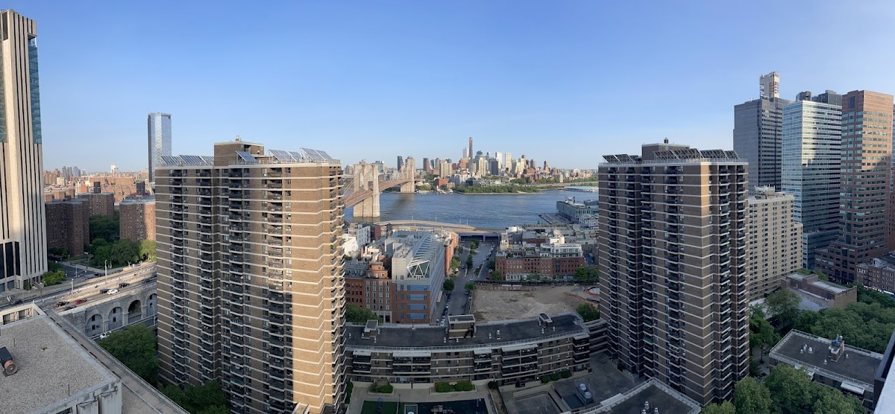
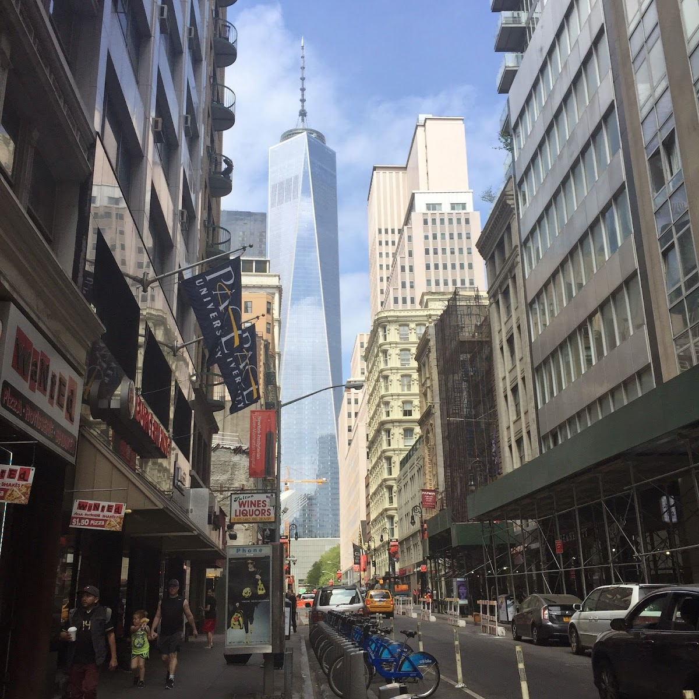
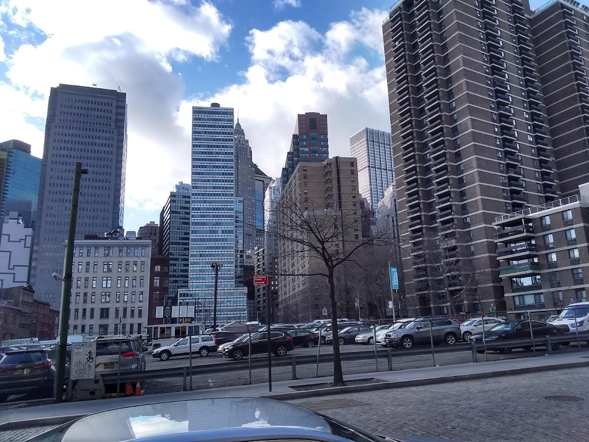
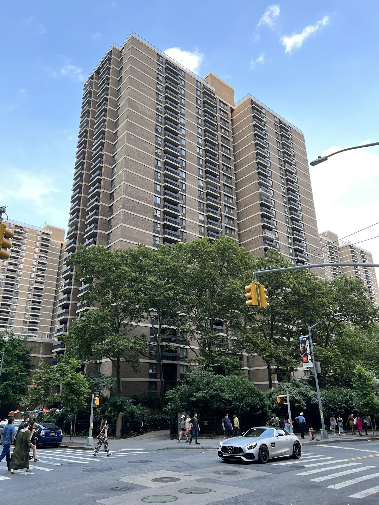

Shared spaces
South Bridge Towers
A cooperative housing complex located near the South Street Seaport in Manhattan.
Background
South Bridge Towers was developed in the 1960s as part of urban renewal efforts in Lower Manhattan. The complex includes multiple high-rise buildings and offers residents access to communal facilities and proximity to the waterfront.
Original AI-assisted background; not independently verified.
From the original map
Great elevated playground in this complex
Homes and shared residential spaces may be private. View from public streets unless entry is clearly permitted; map pins are reference points, not confirmed entrances.
Nearby places
Straight-line distances, not walking routes.
Discussion & corrections




Photo credits
Willi Schulmeyer, James Gray King, Leo Rodgers, Юрий (uzex), Aaron Clinton, 林建中, Дмитрий Салмин, Sukrut Rao, George Buachidze, Adam Sinovsky40.70948, -74.00426 · Explore the surrounding area ↗